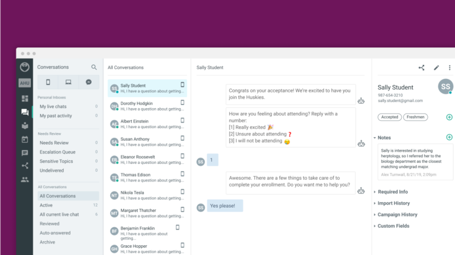

Select work
All works

AdminHub AI suite
Leading product design and user research of the SaaS platform helping educators use
behavioral science to nudge students toward success
Connected Proof
Designing the cross-device software for an industrial IoT platform to help make food and
beverage production more sustainable

BevSpot Inventory
Leading the UX evolution of an industry-favorite app by working closely with customers and
“taking over” their jobs for the day